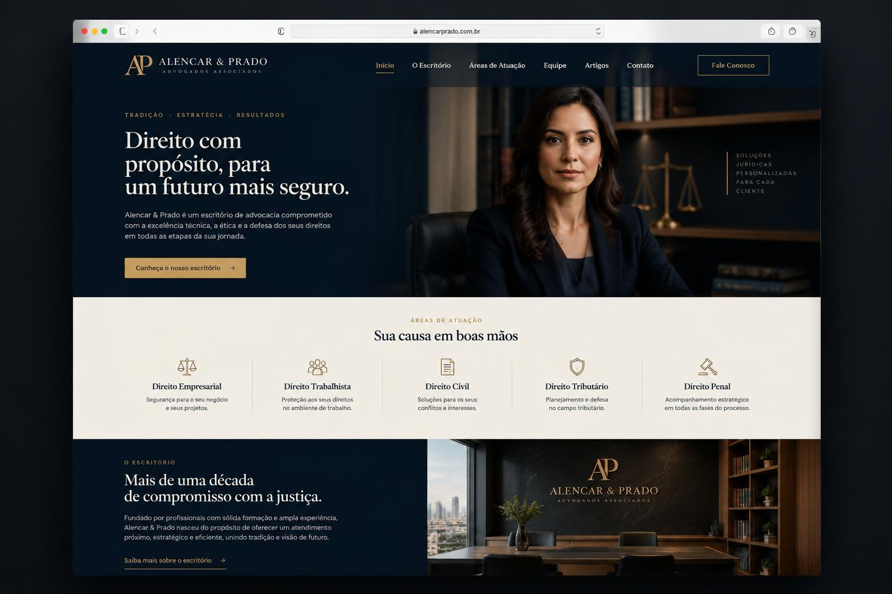

Arquivo de projetos
Todos os sites.
Uma galeria central para apresentar cada trabalho completo. Novos projetos podem ser adicionados aqui conforme o portfólio crescer.
Arquivo de projetos
Uma galeria central para apresentar cada trabalho completo. Novos projetos podem ser adicionados aqui conforme o portfólio crescer.